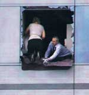
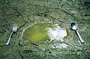

Mobilising citizen journalists for humanitarian coverage
Never has citizen journalism become more relevant, vital and even controversial in the delivery of news and information in this day and age.
Bloggers and practically anyone wired to the Internet – otherwise known as the “Fifth Estate” – are beating traditional media to the punch in breaking news stories. This is particularly evident in disasters and humanitarian crises with netizens crowding social media with information faster than you can say ‘tweet’.
But beyond breaking news lies an abundance of issues in humanitarian emergencies.
Professional journalists specialising in humanitarian coverage are lacking in numbers. This is where citizen journalists can step in to fill the void through the art of storytelling, guided by journalistic values that many media professionals say are lost in the wired, wired world of social networking.
 Writing tools for you
How do you combine journalistic training and values with ordinary citizens’ passion for online storytelling? This online tutorial is designed to help you, the citizen journalist, write humanitarian stories like a professional would with the following as guiding principles:
- Practising accuracy and striking for balance in a story
- Finding creative ways to write compelling stories
- Gaining a more informed view of humanitarian issues
 Humanitarian gallery
What are making headlines around the humanitarian world? What do “underreported issues” mean? How do you know when a crisis is really a crisis?
Visit the gallery to get some insights into these questions.
Learn moreBack to top